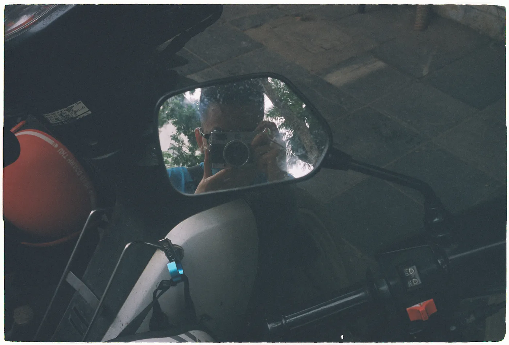

100% Focusing On Film Photography
By Huy Quang Vũ | I have a deep love for capturing moments, and I firmly believe that as the years pass, photos become increasingly valuable. However, when I look back at my previous photos from 2017, most of them taken with my phone seem to lack any real value. There's no mystery to unravel or story to tell in those images. In contrast, since I started taking film photos in 2021, excluding some failed shots, the majority of my successful film photos have enduring significance, offering viewers meaningful insights.
This realization prompted me to reflect on why I had taken so many poor and insignificant photos in the past and how I could extract the most valuable stories from my images. It dawned on me that I had been taking photos too hastily with my phone or digital camera. I hadn't allowed my eyes to truly see, my mind to contemplate, or my heart to connect with the moment before pressing the shutter button. If my heart didn't beat with emotion during those moments, how could I expect my viewers to feel what I wanted to convey when there was nothing to express?
As a result, I made a decision. I placed my Moment phone lens in the closet, returned my digital camera to my father, and invested in a new film camera equipped with an automatic light meter. I also archived all my non-film photos on Instagram. I resolved to force myself to slow down, to genuinely observe and feel my surroundings before framing a shot, adjusting the focus, and capturing the image. And it worked. Combined with the vintage film colors, my recent photos now possess greater depth and meaning, inviting viewers to ponder the riddles they present. Most importantly, I've learned to pace myself, to consider what truly deserves a place in my photos.